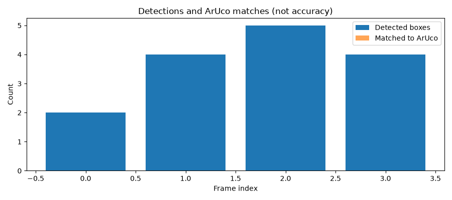
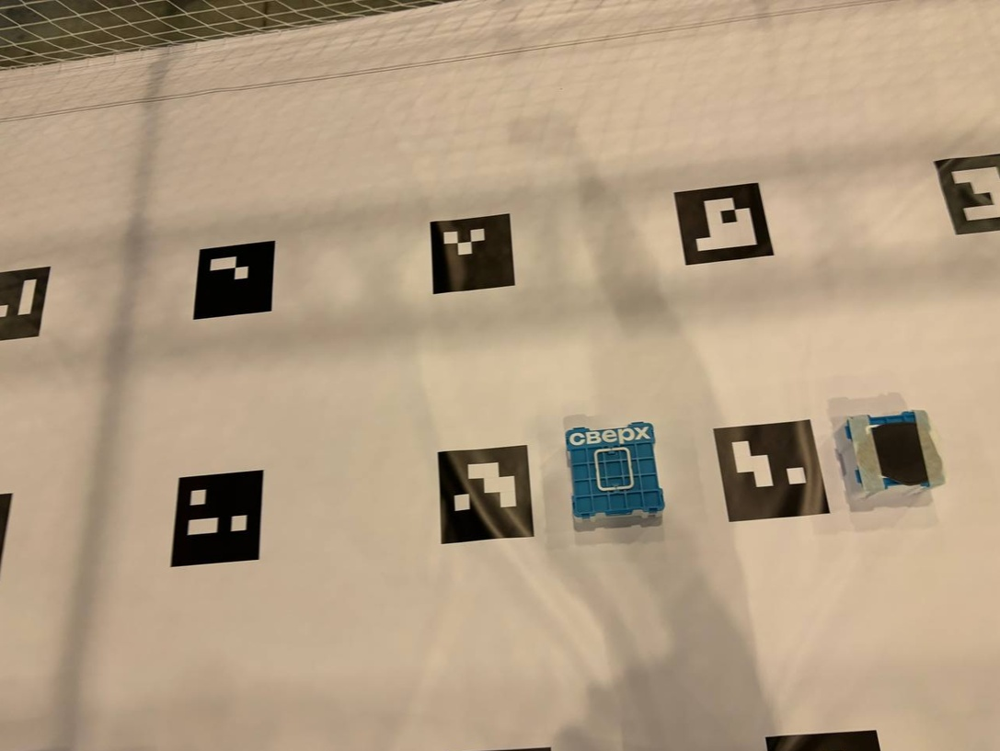
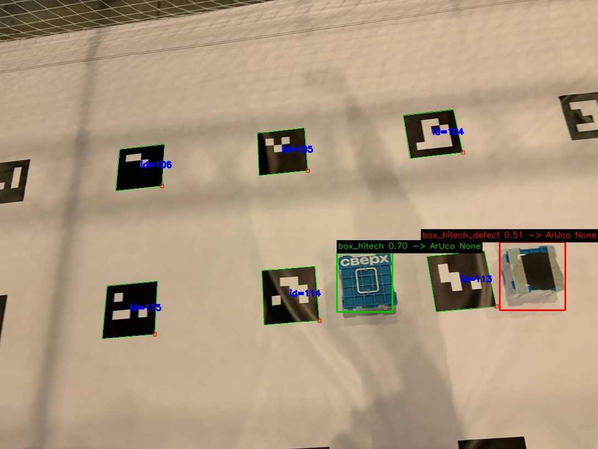
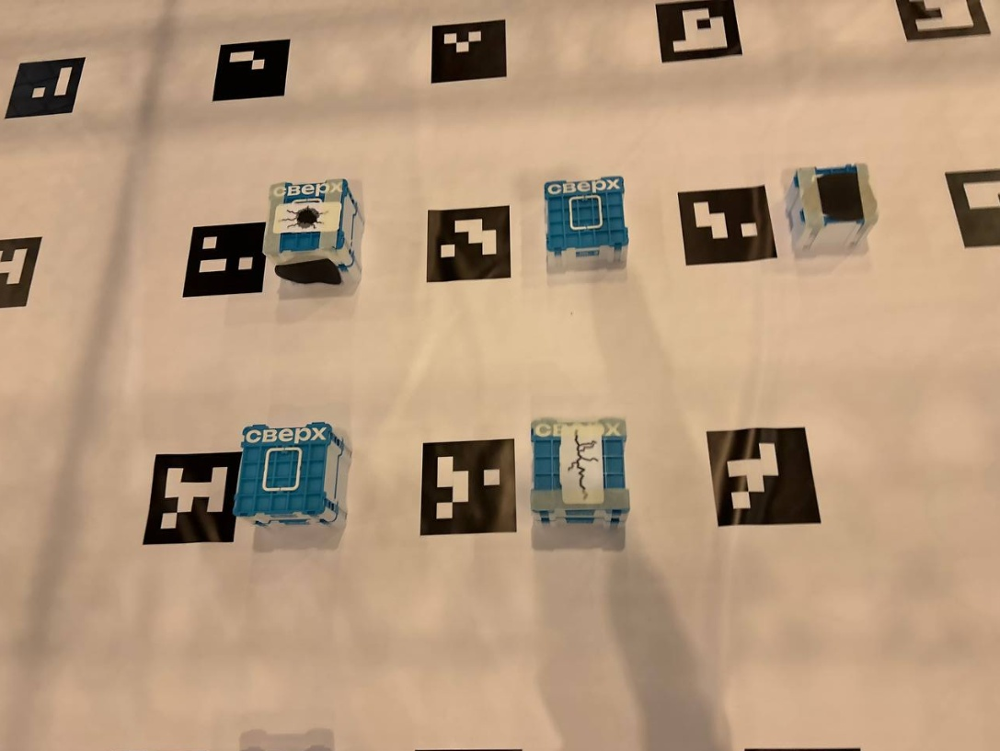
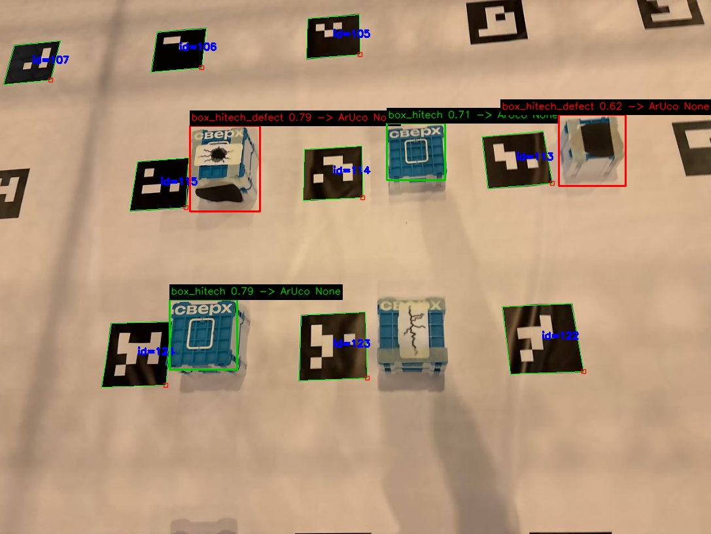
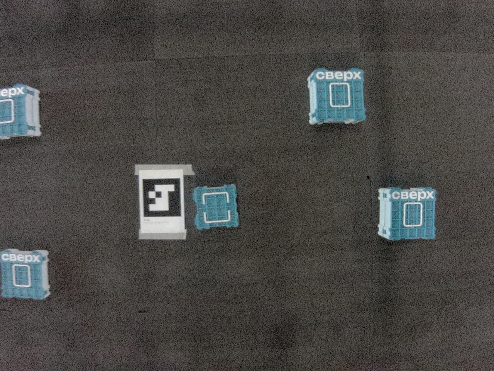
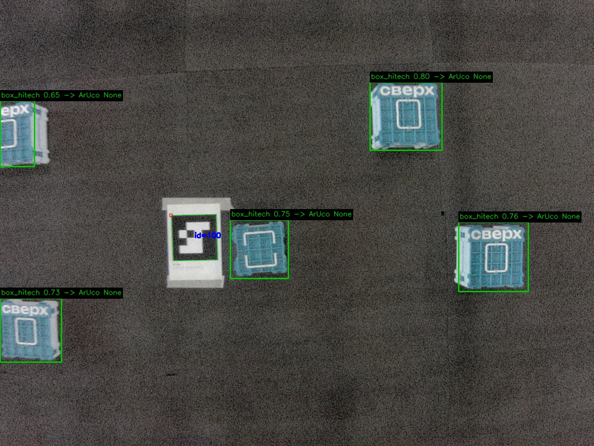
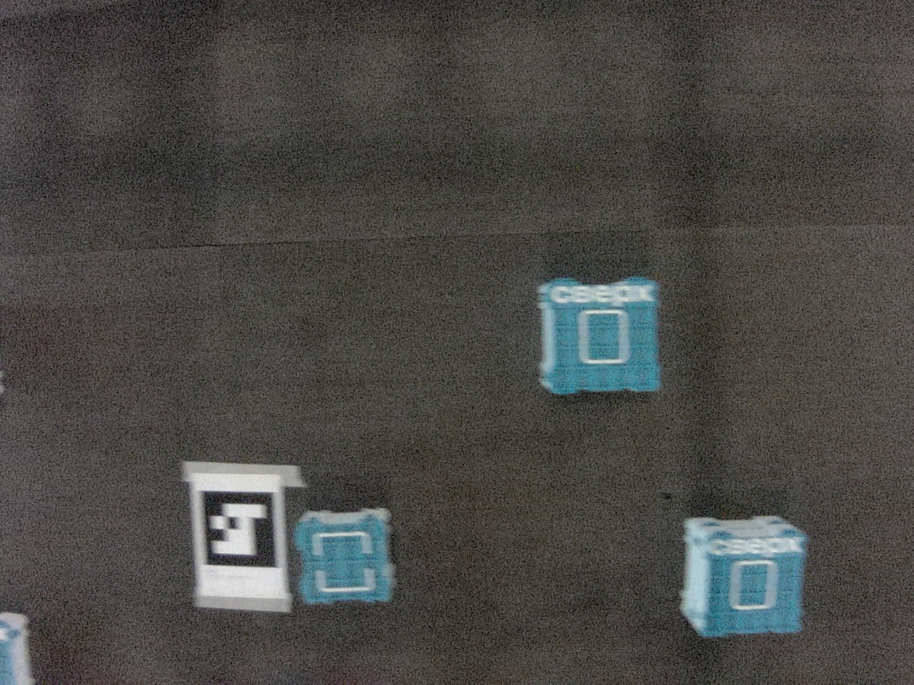
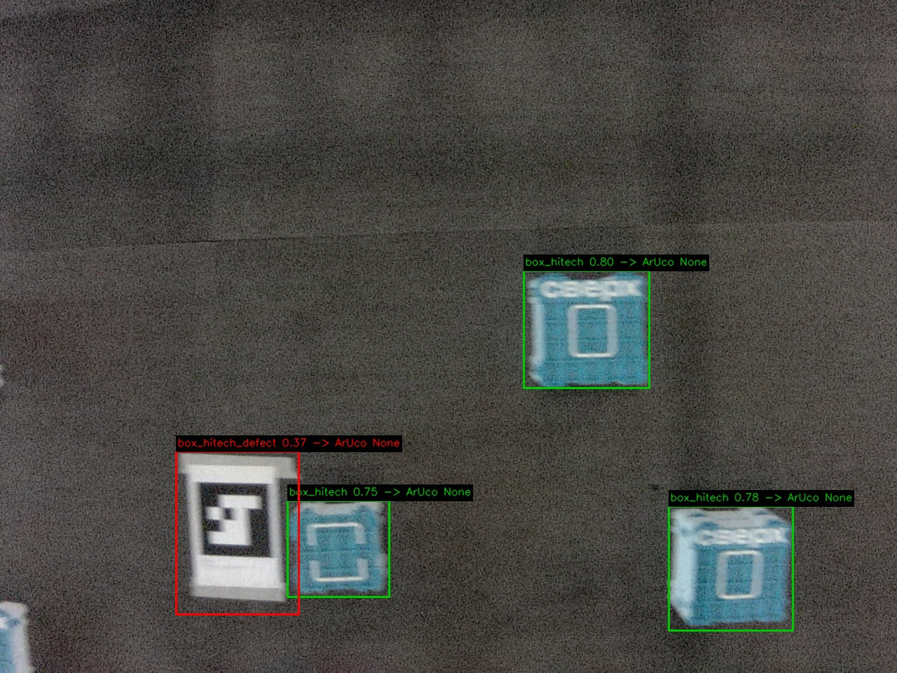

Исходник слева, результат справа. Кадры взяты из репозитория; независимость от обучения и происхождение с конкурсной площадки не подтверждены. Количество найденных объектов не является оценкой точности. Для P/R нужна независимая ручная разметка. Метод при разметке: confidence-ranked matching, одинаковый класс, IoU ≥ 0.5; это не mAP.

Найдено: 2; с ID: 0; 1.76 с. Ручной разметки нет: точность не вычислялась.


Найдено: 4; с ID: 0; 0.10 с. Ручной разметки нет: точность не вычислялась.


Найдено: 5; с ID: 0; 0.12 с. Ручной разметки нет: точность не вычислялась.


Найдено: 4; с ID: 0; 0.10 с. Ручной разметки нет: точность не вычислялась.

